|
 |
| ПРАЛУЭНТ (PRALUENT) alirocumab раствор д/п/к введения | ||||||||||
|
Клинико-фармакологическая группа: Гиполипидемический препарат - полностью гуманизированное моноклональное антитело (IgG1) Номер и дата регистрации: ЛП-№(000321)-(РГ-RU) от 26.07.21 Код ATX: C10AX14 |
Владелец регистрационного удостоверения: зарегистрировано Представительство: | |||||||||
Форма выпуска, состав и упаковка Раствор для п/к введения в виде прозрачной или слегка опалесцирующей, бесцветной или желтоватого цвета жидкости.
Вспомогательные вещества: L-гистидин и L-гистидина гидрохлорида моногидрат - 1.241 мг*, сахароза - 100 мг, полисорбат 20 - 0.1 мг, вода д/и - до 1 мл. 1 мл - шприцы одноразовые из прозрачного стекла (1) - блистеры пластиковые с покрытием (2×) - пачки картонные. Раствор для п/к введения в виде прозрачной или слегка опалесцирующей, бесцветной или желтоватого цвета жидкости.
Вспомогательные вещества: L-гистидин и L-гистидина гидрохлорида моногидрат - 0.931 мг*, сахароза - 100 мг, полисорбат 20 - 0.1 мг, вода д/и - до 1 мл. 1 мл - шприцы одноразовые из прозрачного стекла (1) - блистеры пластиковые с покрытием (2×) - пачки картонные. * суммарное количество L-гистидина и L-гистидина гидрохлорида моногидрата в пересчете на L-гистидин. | ||||||||||
| ||||||||||
Описание препарата основано на официально утвержденной инструкции по применению и утверждено компанией-производителем для издания 2022 г. | ||||||||||
Фармакологическое действие |
Фармакокинетика |
Показания |
Режим дозирования |
Побочное действие |
Противопоказания |
Беременность и лактация |
Особые указания |
Передозировка |
Лекарственное взаимодействие |
Условия хранения и сроки годности |
Условия реализации
Фармакологическое действие
Алирокумаб является полностью человеческим моноклональным антителом [изотип иммуноглобулинов G1 (IgG1)], мишенью которого является фермент пропротеиновая конвертаза субтилизин-кексин типа 9 (PCSK9). Алирокумаб производится с помощью технологии рекомбинантной ДНК с использованием суспензионной культуры клеток яичника китайского хомячка. Алирокумаб имеет молекулярную массу приблизительно 146 кДа. Механизм действия PCSK9 связывается с рецепторами липопротеинов низкой плотности (Р-ЛПНП) на поверхности гепатоцитов, способствуя деградации Р-ЛПНП в печени. Р-ЛПНП являются главными рецепторами, которые выводят из системного кровотока циркулирующие ЛПНП, поэтому уменьшение количества Р-ЛПНП при связывании их с PCSK9 приводит к повышению концентрации холестерина ЛПНП (ХС-ЛПНП) в крови. Ингибируя связывание PCSK9 с Р-ЛПНП, алирокумаб увеличивает количество Р-ЛПНП для выведения ЛПНП, снижая, таким образом, концентрации ХС-ЛПНП в крови. Р-ЛПНП также связывают богатые триглицеридами (ТГ) ремнантные липопротеины очень низкой плотности (ЛПОНП) и липопротеины промежуточной плотности (ЛППП). Поэтому лечение алирокумабом может снижать концентрации этих ремнантных липопротеинов, о чем свидетельствует снижение аполипопротеина В (Апо В), холестерина липопротеинов, не являющихся липопротеинами высокой плотности (ХС- ЛПнеВП) и ТГ. Алирокумаб также снижает концентрации липопротеина а (ЛП(а)), являющегося формой ЛПНП, которые связаны с аполипопротеином (а). Однако было показано, что Р-ЛПНП имеют низкую аффинность к ЛП(а), в связи с чем точный механизм, с помощью которого алирокумаб снижает ЛП(а), полностью не установлен. Генетические исследования В генетических исследованиях, проведенных у человека, были выявлены разновидности гена PCSK9 с мутациями потери или повышения функции. У пациентов с одним аллелем PCSK9 с мутацией потери функции отмечались более низкие концентрации ХС-ЛПНП, которые коррелировали со значительно более низкой частотой развития ИБС. У некоторых пациентов были выявлены мутации потери функции в двух аллелях, и у них отмечались очень низкие концентрации ХС-ЛПНП в крови с концентрациями в крови ХС-ЛПВП и ТГ в нормальном диапазоне. Наоборот, мутации повышения функции в гене PCSK9 были выявлены у пациентов с повышенными концентрациями ХС-ЛПНП в крови и клиническим диагнозом семейной гиперхолестеринемии. Наблюдательный анализ показал, что без лечения концентрации ХС-ЛПНП в крови у пациентов с мутациями повышения функции в гене PCSK9 находились в диапазоне, подобном наблюдавшемуся у пациентов с более часто встречающимися мутациями, вызывающими гетерозиготную форму семейной гиперхолестеринемии (такими как мутации в гене Р-ЛПНП), демонстрируя центральную роль фермента PCSK9 в метаболизме ХС-ЛПНП и его концентрациях в крови. В многоцентровом двойном слепом, плацебо-контролируемом исследовании продолжительностью 14 недель 13 пациентов с гетерозиготной формой семейной гиперхолестеринемии, связанной с мутацией повышения функции в гене PCSK9, были рандомизированы в 2 группы: группу, получающую алирокумаб в дозе 150 мг 1 раз в 2 недели, и группу, получающую плацебо. Среднее значение концентрации ХС-ЛПНП в крови составляло 151.5 мг/дл. На 2 неделе лечения среднее значение снижения исходной концентрации ХС-ЛПНП в крови составило 62.5% в группе пациентов, получавших алирокумаб, по сравнению с 8.8% у пациентов, получавших плацебо. На 8 неделе лечения среднее значение снижения концентрации ХС-ЛПНП в крови от исходного значения у всех пациентов, получавших алирокумаб, составило 72.4%. Фармакодинамические свойства Алирокумаб является полностью человеческим антителом, которое подавляет активность PCSK9 как в исследованиях in vitro,так и в системах моделей in vivo. Большое количество исследований, проведенных у человека и животных, продемонстрировало центральную роль, которую играют повышенные концентрации ХС-ЛПНП в крови в начале и прогрессировании атеросклероза. Другие липопротеины, содержащие Апо В-100, особенно богатые триглицеридами ремнантные липопротеины (образовавшиеся из ЛПОНП и ЛППП) и ЛП(а), также считаются способствующими развитию атеросклероза. Однако проведенные до настоящего времени исследования не выявили независимого влияния снижения концентраций этих липопротеинов на сердечно-сосудистую заболеваемость и смертность. В исследованиях in vitro, алирокумаб не индуцировал антитело-зависимую клеточно-опосредованную токсичность и комплемент-зависимую цитотоксичность (Fc-опосредованную эффекторную функцию), как в присутствии, так и в отсутствии PCSK9. У алирокумаба, связанного с PCSK9, не наблюдалось образования нерастворимых иммунных комплексов, способных связывать протеины комплемента. Клиническая эффективность/клинические исследования при первичной гиперхолестеринемии и смешанной дислипидемии Резюме клинических исследований III фазы с использованием режима дозирования 75 мг и/или 150 мг каждые 2 недели (Q2W) Эффективность алирокумаба была изучена в 10 исследованиях III фазы (5 плацебо-контролируемых и 5 эзетимиб-контролируемых исследований), включавших 5296 рандомизированных пациентов с гиперхолестеринемией (несемейной и гетерозиготной формой семейной) или смешанной гиперлипидемией, из них 3188 пациентов были рандомизированы для терапии алирокумабом. Три из этих 10 исследований были проведены исключительно у пациентов с гетерозиготной формой семейной гиперхолестеринемии. Большинство пациентов принимали одновременно липидмодифицирующую терапию, состоящую из максимально переносимых доз статинов в сочетании или без сочетания с другими липидмодифицирующими видами лечения и имели высокий и очень высокий сердечно-сосудистый риск. Два исследования были проведены у пациентов, которые не получали одновременно статины, включая одно исследование у пациентов с документированной непереносимостью статинов. Два исследования (LONG TERM и HIGH FH ), включающие в общей сложности 2416 пациентов, были проведены только с дозой 150 мг 1 раз в 2 недели. Восемь исследований были проведены с дозой 75 мг 1 раз в 2 недели и критерием для повышения дозы до 150 мг 1 раз в 2 недели на 12 неделе было недостижение пациентами целевого значения концентрации ХС-ЛПНП в крови, основанного на степени их сердечно-сосудистого риска на 8 неделе лечения. Главной конечной точкой эффективности во всех клинических исследованиях III фазы было среднее значение снижения концентрации ХС-ЛПНП в крови на 24 неделе по сравнению с плацебо и эзетимибом. Все указанные исследования достигли своей главной конечной точки. В целом, применение алирокумаба приводило также к статистически значимо большему значению процента снижения концентраций ОХ, ХС-ЛПнеВП, Апо В и ЛП(а) по сравнению с плацебо/эзетимибом, независимо от того получали ли пациенты статины. Алирокумаб также снижал концентрации ТГ и увеличивал концентрации ХС-ЛПВП и Апо А-1 по сравнению с плацебо. Результаты по эффективности были единообразными у пациентов с гетерозиготной формой семейной гиперхолестеринемии, без гетерозиготной семейной гиперхолестеринемии, у пациентов со смешанной дислипидемией и пациентов с сахарным диабетом. Снижение концентраций ХС-ЛПНП в крови было единообразным, независимо от того, принимались или не принимались пациентами одновременно статины, и от доз последних. После прекращения введения алирокумаба не наблюдалось "синдрома отмены", и концентрация ХС-ЛПНП в крови постепенно возвращалась к исходным показателям. Результаты оценки влияния на сердечно-сосудистые события В заранее запланированном объединенном анализе данных исследований III фазы у 110 пациентов (3.5%) в группе алирокумаба и у 53 пациентов (3.0%) в контрольной группе (плацебо или активный контроль) наблюдались следующие, подтвержденные экспертизой, сердечно-сосудистые события, развившиеся во время лечения: смерть, связанная с ИБС, инфаркт миокарда, ишемический инсульт, нестабильная стенокардия, потребовавшая госпитализации, госпитализация по поводу хронической сердечной недостаточности и реваскуляризация. Подтвержденные большие нежелательные сердечно-сосудистые события (БНССС), включавшие смерть от ИБС, инфаркт миокарда, ишемический инсульт или нестабильную стенокардию, требующую госпитализации, наблюдались у 52 из 3182 пациентов (1.6%) в группе алирокумаба и у 33 из 1792 пациентов (1.8%) в контрольной группе (плацебо и активный контроль). В заранее запланированном анализе исследования LONG TERM подтвержденные экспертизой сердечно-сосудистые события, развившиеся во время лечения, наблюдались у 72 из 1550 пациентов (4.6%) в группе алирокумаба и у 40 из 788 пациентов (5.1%) в группе плацебо; подтвержденные экспертизой БНССС наблюдались у 27 из 1550 пациентов (1.7%) в группе алирокумаба и у 26 из 788 пациентов (3.3%) в группе плацебо. Отношения рисков (ОР) рассчитывали ретроспективно; для всех сердечно-сосудистых событий отношение рисков = 0.91 (95% ДИ, 0.62-1.34); для БНССС отношение рисков = 0.52 (95% ДИ, 0.31-0.90). Смерть от всех причин В клинических исследованиях III фазы смерть от всех причин составляла 0.6% (20 из 3182 пациентов) в группе алирокумаба и 0.9% (17 из 1792 пациентов) в контрольной группе. Главной причиной смертельных исходов были сердечно-сосудистые события. Исследование CHOICE I с использованием режима дозирования 300 мг каждые 4 недели (Q4W) Исследование CHOICE I - многоцентровое двойное слепое плацебо-контролируемое 48-недельное исследование, которое включало 540 пациентов, получающих максимально переносимую дозу статина с или без другой липид-модифицирующей терапии, и 252 пациента, не получавших статины. Пациенты были случайным образом распределены в группы лечения алирокумабом в дозе 300 мг Q4W, алирокумабом в дозе 75 мг Q4W или плацебо. 71.6% пациентов относились к категориям высокого или очень высокого сердечно-сосудистого риска. Все пациенты не имели целевых значений ХС-ЛПНП при включении в исследование. В группах алирокумаба доза могла быть скорректирована до 150 мг Q2W на 12 неделе у пациентов с сохраняющимся уровнем ХС-ЛПНП >70 мг/дл или ≥100 мг/дл в зависимости от их степени сердечно-сосудистого риска, или у пациентов, у которых не отмечалось уменьшение ХС-ЛПНП на 30% от исходного уровня. В когорте пациентов, принимавших статины, средняя исходная концентрация ХС-ЛПНП составила 112.7 мг/дл. На 12 неделе среднее процентное изменение от исходных значений ХС-ЛПНП в группе алирокумаб 300 мг Q4W составило -55.3% по сравнению с +1.1% для плацебо, при этом 77.3% пациентов, получавших алирокумаб 300 мг Q4W, достигли концентрации ХС-ЛПНП < 70 мг/дл по сравнению с 9.3% в группе плацебо. Увеличение дозы алирокумаба до 150 мг Q4W на 12 неделе потребовалось у 19.3% пациентов этой когорты. На 24 неделе среднее процентное изменение от исходных значений ХС-ЛПНП в группе алирокумаб 300 мг Q4W/150 мг Q2W составило -58.8% по сравнению с -0.1% для плацебо. В когорте пациентов, не получавших сопутствующей терапии статинами, средняя исходная концентрация ХС-ЛПНП составляла 142.1 мг/дл. На 12 неделе среднее процентное изменение ХС-ЛПНП от исходного значения в группе алирокумаба 300 мг Q4W составило -58.4 % по сравнению с +0.3% для группы плацебо, при этом 65.2% пациентов, получавших алирокумаб 300 мг Q4W, достигли концентрации ХС-ЛПНП <70 мг/дл по сравнению с 2.8% в группе плацебо. Увеличение дозы алирокумаба до 150 мг Q4W на 12 неделе потребовалось у 14,7% пациентов этой когорты. На 24 неделе среднее процентное изменение от исходных значений ХС-ЛПНП в группе алирокумаб 300 мг Q4W/150 мг Q2W составило -52.7% по сравнению с -0.3% для группы плацебо. В обеих когортах пациентов различие по сравнению с плацебо было статистически значимым на 24 неделе для всех параметров липидного обмена, за исключением Апо А-1 в подгруппе пациентов, принимавших статины. Исследование ESCAPE (с участием пациентов, получающих ЛПНП-аферез) Многоцентровое, двойное слепое, плацебо-контролируемое, 18-недельное исследование включало 62 пациентов с гетерозиготной формой семейной гиперхолестеринемии (41 пациент в группе алирокумаба и 21 пациент в группе плацебо), которым проводился ЛПНП-аферез еженедельно или каждые 2 недели. С 1 по 6 неделю пациенты получали лечение алирокумабом в дозе 150 мг каждые 2 недели или плацебо, им также проводился ЛПНП-аферез с фиксированной частотой в соответствии с принятой индивидуальной схемой афереза до включения в исследование. Решение о том, требуется ли пациенту проведение афереза или нет, принималось с 7 по 18 неделю на основании эффекта лечения у каждого пациента. К 6 неделе средний процент изменения концентрации ХС-ЛПНП относительно исходного значения составил -53.7% в группе применения алирокумаба по сравнению с 1.6% в группе применения плацебо (р<0.0001). С 7 по 18 неделю было отмечено уменьшение стандартизованной частоты проведения афереза на 50% (р<0.0001) в группе алирокумаба по сравнению с группой плацебо. Лечение аферезом было отменено у 11 из 41 пациента (26.8%) в группе алирокумаба, и у 27 из 41 пациента (65.8%) удалось избежать проведения, по меньшей мере, половины процедур. В группе плацебо ни у одного из пациентов лечение аферезом не было отменено полностью, и лишь у 2 из 21 пациента (9.5%) удалось избежать проведения, по меньшей мере, половины процедур. Клиническая эффективность и безопасность при профилактике сердечно-сосудистых событий Исследование ODYSSEY OUTCOMES Многоцентровое двойное слепое плацебо-контролируемое исследование, включавшее 18924 взрослых пациента (9462 пациента, получавших алирокумаб, 9462 пациента, получавших плацебо), которые перенесли острый коронарный синдром (34.6% - инфаркт миокарда с подъемом сегмента ST; 48.6% - инфаркт миокарда без подъема сегмента ST; 16.8% - нестабильная стенокардия) за 4-52 недели до рандомизации и получали либо высокоинтенсивную терапию статинами (аторвастатин 40 или 80 мг; или розувастатин 20 или 40 мг) ± другая липид-модифицирующая терапия, либо максимально переносимые дозы указанных статинов ± другая липид-модифицирующая терапия. Все пациенты были рандомизированы в соотношении 1:1 в группы алирокумаба в дозе 75 мг Q2W или плацебо Q2W. Начиная со 2 месяца у пациентов с уровнем ХС-ЛПНП ≥ 50 мг/дл (1.29 ммоль /л) дозу алирокумаба увеличивали до 150 мг Q2W. В дальнейшем, если у пациентов, получавших алирокумаб в дозе 150 мг Q2W регистрировалось два последовательных значения ХС-ЛПНП ниже 25 мг/дл (0.65 ммоль/л), дозу препарата снижали до 75 мг Q2W. Пациенты, получавшие препарат в дозе 75 мг Q2W, у которых регистрировались два последовательных значения ХС-ЛПНП ниже 15 мг/дл (0.39 ммоль/л) переводились в заслепленном режиме на плацебо. Примерно у 2615 (27.7%) из 9451 пациентов, получавших алирокумаб, потребовалась коррекция дозы до 150 мг Q2W. В дальнейшем у 805 (30.8%) из этих 2615 пациентов, доза была снижена до 75 мг Q2W. В целом 730 (7.7%) из 9451 пациентов в группе алирокумаба перешли на плацебо. Средняя продолжительность наблюдения в исследовании составила 33 месяца. При рандомизации большинство пациентов (88.8%) получали высокоинтенсивную терапию статинами ± другая липид-модифицирующая терапия. Алирокумаб значимо снижал риск первичной комбинированной конечной точки - время до первого большого нежелательного сердечно-сосудистого события, включая смерть от ИБС, нефатальный инфаркт миокарда, фатальный и нефатальный ишемический инсульт, или нестабильную стенокардию, потребовавшую госпитализации (ОР 0.85; 95% ДИ: 0.78-0.93; р=0.0003). Кроме этого, алирокумаб значимо снижал риск следующих комбинированных конечных точек: большие коронарные события (смерть от ИБС или инфаркт миокарда); коронарные события (большие коронарные события, нестабильная стенокардия, требующая госпитализации или процедура коронарной реваскуляризации, связанная с ишемией); сердечно-сосудистые события (сердечно-сосудистая смерть, любое нефатальное коронарное событие или нефатальный ишемический инсульт); а также комбинированной конечной точки, включающей смерть от всех причин, нефатальный инфаркт миокарда или нефатальный ишемический инсульт. Терапия алирокумабом была ассоциирована со снижением риска смерти от всех причин (ОР 0.85; 95% ДИ: 0.73-0.98; р=0.0261 (не скорректировано для множественных сравнений)). Фармакокинетика
Всасывание После п/к введения препарата Пралуэнт в дозе от 50 мг до 300 мг среднее время достижения максимальной концентрации алирокумаба в сыворотке крови составляло 3-7 дней. Фармакокинетика алирокумаба после однократного п/к введения в дозе 75 мг в область живота, бедра или плеча была подобной. По данным популяционного анализа фармакокинетических показателей абсолютная биодоступность алирокумаба после п/к введения составляла 85%. Незначительно большее (2.1-2.7-кратное), чем пропорциональное дозе, увеличение концентраций алирокумаба, наблюдалось при двукратном увеличении дозы с 75 мг до 150 мг 1 раз в 2 недели. Равновесное состояние достигалось после введения 2-3 доз с максимальным двукратным коэффициентом накопления. Месячная экспозиция алирокумаба при применении в дозе 300 мг каждые 4 недели аналогична таковой при применении дозы 150 мг каждые 2 недели. Распределение После в/в введения Vd алирокумаба составлял 0.04-0.05 л/кг, что указывает на распределение алирокумаба, главным образом, в системе кровообращения. Метаболизм Специальные исследования метаболизма не проводились, т.к. алирокумаб является белком. Предполагается, что алирокумаб расщепляется на небольшие пептиды и отдельные аминокислоты. Выведение У алирокумаба наблюдались 2 фазы выведения. В низких концентрациях элиминация происходит преимущественно через насыщаемую связь с мишенью (PCSK9), в то время как при более высоких концентрациях элиминация алирокумаба происходит преимущественно через ненасыщаемый протеолитический путь. По данным популяционного анализа фармакокинетических показателей средний период полувыведения алирокумаба составлял 17-20 дней у пациентов, получавших алирокумаб в качестве монотерапии п/к в дозах 75 мг 1 раз в 2 недели или 150 мг 1 раз в 2 недели. При одновременном применении со статинами, средний T1/2 алирокумаба составлял 12 дней. Особые группы пациентов Пол. По данным популяционного анализа фармакокинетических показателей половая принадлежность пациентов не влияла на фармакокинетику алирокумаба. Пациенты пожилого возраста. По данным популяционного анализа фармакокинетических показателей, возраст ассоциировался с небольшим различием в системной экспозиции алирокумаба в равновесном состоянии без влияния на его эффективность и безопасность. Масса тела. По данным популяционного анализа фармакокинетических показателей масса тела оказывала незначительное влияние на системную экспозицию алирокумаба без влияния на его эффективность и безопасность. Пациенты детского возраста. Фармакокинетические эффекты алирокумаба у пациентов детского возраста к настоящему моменту не изучались. Нарушения функции печени. В клиническом исследовании I фазы при однократном подкожном введении алирокумаба в дозе 75 мг фармакокинетические показатели алирокумаба у пациентов с печеночной недостаточностью легкой и средней степени тяжести были аналогичными таковым у пациентов с нормальной функцией печени. Доступные данные по фармакокинетике алирокумаба у пациентов с печеночной недостаточностью тяжелой степени отсутствуют. Нарушения функции почек. Т.к. нет сведений о том, что моноклональные антитела выводятся почками, не ожидается, что функциональное состояние почек повлияет на фармакокинетику алирокумаба. Популяционный анализ фармакокинетических показателей продемонстрировал, что нарушение функции почек легкой и средней степени тяжести не оказывало значимого воздействия на фармакокинетику алирокумаба. Данные по фармакокинетике алирокумаба у пациентов с тяжелыми нарушениями функции почек ограничены. Расовая принадлежность. По данным популяционного анализа фармакокинетических показателей расовая принадлежность не оказывала влияния на фармакокинетику алирокумаба. После однократного подкожного введения алирокумаба в дозах 100-300 мг не наблюдалось значимых различий в системной экспозиции у здоровых добровольцев, являющихся японцами и представителями белой расы. Показания
Первичная гиперхолестеринемия и смешанная дислипидемия Препарат Пралуэнт показан взрослым пациентам для лечения первичной гиперхолестеринемии (несемейной гиперхолестеринемии и гетерозиготной формой семейной гиперхолестеринемии) или смешанной дислипидемии, включая пациентов с сахарным диабетом 2 типа, в дополнение к диете, для снижения концентрации холестерина липопротеинов низкой плотности (ХС-ЛПНП), общего холестерина (общего-ХС), холестерина липопротеинов, не являющихся липопротеинами высокой плотности (ХС-ЛПнеВП), аполипопротеина В (Апо В), триглицеридов (ТГ) и липопротеина а (ЛПа) и повышения концентраций холестерина липопротеинов высокой плотности (ХС-ЛПВП) и аполипопротеина А-1 (Апо А-1):
Установленное атеросклеротическое сердечно-сосудистое заболевание Препарат Пралуэнт показан взрослым пациентам с установленным атеросклеротическим сердечно-сосудистым заболеванием с целью снижения риска развития сердечно-сосудистых событий посредством снижения ХС-ЛПНП как дополнение к коррекции других факторов риска:
Режим дозирования
До начала терапии препаратом Пралуэнт необходимо исключить вторичные причины гиперлипидемии или смешанной дислипидемии (например, нефротический синдром, гипотиреоз). Препарат вводят п/к. Начальная доза препарата Пралуэнт составляет 75 мг 1 раз каждые 2 недели. У пациентов, которым требуется большее снижение концентрации ХС-ЛПНП (> 60%), начальная доза препарата Пралуэнт может составлять 150 мг, которую также вводят 1 раз каждые 2 недели или 300 мг 1 раз каждые 4 недели (ежемесячно). Дозу препарата Пралуэнт следует подбирать индивидуально на основании таких параметров как исходные значения ХС-ЛПНП, цели терапии и ответ пациента на лечение. Концентрации липидов в крови можно оценивать через 4-8 недель после начала лечения или титрования дозы и проводить соответствующую коррекцию дозы. При необходимости дополнительного снижения концентрации ХС-ЛПНП у пациентов, которым препарат Пралуэнт назначался в дозе 75 мг 1 раз каждые 2 недели или 300 мг 1 раз каждые 4 недели, доза может быть скорректирована до максимальной дозы 150 мг 1 раз каждые 2 недели. В случае пропуска очередного введения препарата, пациенту необходимо как можно скорее ввести пропущенную дозу и затем продолжить терапию в соответствии с исходным режимом дозирования. Пациенты, которым проводится ЛПНП-аферез Препарат Пралуэнт может применяться у пациентов, которым проводится ЛПНП-аферез, независимо от времени и частоты проведения процедуры. Рекомендуемая доза - 150 мг 1 раз каждые 2 недели. Концентрации ХС-ЛПНП можно оценивать до афереза для определения необходимости его проведения. Особые группы пациентов Дети. Безопасность и эффективность применения препарата Пралуэнт у детей в возрасте до 18 лет не установлены. Пациенты пожилого возраста У пациентов пожилого возраста коррекции дозы препарата Пралуэнт не требуется (см. раздел "Особые указания"). Печеночная недостаточность. У пациентов с печеночной недостаточностью легкой или средней степени тяжести коррекции дозы препарата Пралуэнт не требуется. Данные о применении препарата Пралуэнт у пациентов с печеночной недостаточностью тяжелой степени отсутствуют. Почечная недостаточность. У пациентов с почечной недостаточностью легкой или средней степени тяжести коррекции дозы препарата Пралуэнт не требуется. Данные о применении препарата у пациентов с почечной недостаточностью тяжелой степени ограничены. Масса тела. Не требуется коррекции режима дозирования в зависимости от массы тела пациентов. Правила введения препарата Препарат Пралуэнт применяют в виде п/к инъекций, проводимых в области бедра, живота или плеча, с помощью одноразовой предварительно заполненной шприц-ручки или одноразового предварительно заполненного шприца. Рекомендуется менять места инъекций при проведении каждой инъекции. При назначении дозы 300 мг препарат вводят в виде двух инъекций по 150 мг в разные места. Препарат Пралуэнт не следует вводить в области активных кожных заболеваний или повреждений, таких как солнечные ожоги, кожная сыпь, воспаления кожи или кожные инфекции. Не следует вводить препарат Пралуэнт в то же место, в которое вводились другие лекарственные препараты. Правила обращения с препаратом Хранить при температуре от 2°С до 8°С. Не замораживать. Не подвергать воздействию высоких температур. При необходимости (например, во время путешествия) препарат Пралуэнт можно хранить при температуре не выше 25°С не более 30 дней. Защищать от света. После извлечения из холодильника препарат Пралуэнт должен быть использован в течение 30 дней или утилизирован. В случае использования предварительно заполненной шприц-ручки к инструкции по медицинскому применению лекарственного препарата прилагается "Инструкция по использованию предварительно заполненных одноразовых шприц-ручек" Описание предварительно заполненных одноразовых шприц-ручек и инструкция по их использованию Пралуэнт, раствор для п/к введения 75 мг/мл в предварительно заполненной шприц-ручке Пралуэнт, раствор для п/к введения 150 мг/мл в предварительно заполненной шприц-ручке Инструкция по применению Пациент должен быть информирован о том, что он должен сохранять эту инструкцию, т.к. она может понадобиться ему снова. Если у пациента появятся вопросы, то ему следует обратиться к лечащему врачу или провизору, или позвонить по номеру телефона, указанному в инструкции. Части шприц-ручки показаны на рисунке: 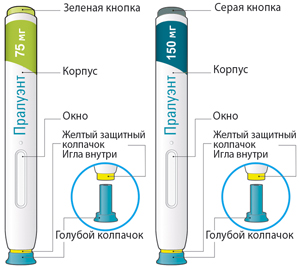 Важная информация Шприц-ручка предназначена только для одноразового использования. Шприц-ручка с зеленой кнопкой: в 1 мл раствора содержится 75 мг алирокумаба. Шприц-ручка с серой кнопкой: в 1 мл раствора содержится 150 мг алирокумаба. Препарат вводится п/к и может вводиться пациентом самостоятельно или другим лицом, ухаживающим за ним. Шприц-ручку можно использовать только для одноразовой инъекции, и она должна быть утилизирована после применения. Правила использования Шприц-ручку следует хранить в недоступном для детей месте. Перед использованием шприц-ручки следует внимательно прочитать инструкцию. Необходимо следовать всем указаниям, представленным в инструкции, при каждом использовании шприц-ручки. Неиспользованные шприц-ручки следует хранить в холодильнике при температуре от 2°С до 8°С. Запрещено Не трогайте желтый защитный колпачок. Не используйте шприц-ручку при протекании или повреждении. Не используйте шприц-ручку при отсутствии голубого колпачка, или если он ненадежно закреплен. Не используйте шприц-ручку повторно. Не трясите шприц-ручку. Не замораживайте шприц-ручку. Не подвергайте шприц-ручку воздействию прямых солнечных лучей. ЭТАП А: ПОДГОТОВКА К ВВЕДЕНИЮ Перед введением препарата понадобятся:
1. Проверьте этикетку на шприц-ручке Проверьте, что Вы взяли правильный (нужный Вам) препарат и правильную (нужную Вам) дозу (шприц-ручка с зеленой кнопкой для дозы 75 мг/мл и шприц-ручка с серой кнопкой для дозы 150 мг/мл). Проверьте срок годности. Не использовать по истечении срока годности.
2. Проверьте окно Проверьте, чтобы видимая в окно жидкость была прозрачной, бесцветной или бледно-желтой, без включений. Если имеются изменения цвета и видимые включения, то не следует использовать шприц-ручку (см. рисунок А). Вы можете увидеть пузырьки воздуха. Это нормальное явление и не влияет на дальнейшее использование препарата. Не используйте шприц-ручку, если окно желтого цвета и не содержит жидкости (см. рисунок В).
3. Оставьте шприц-ручку нагреваться при комнатной температуре в течение 30-40 мин Не нагревайте шприц-ручку, она должна нагреться сама. Используйте шприц-ручку как можно скорее после того, как она нагрелась. Не кладите шприц-ручку обратно в холодильник 4. Подготовка места введения препарата Вымойте руки с мылом и водой и вытрите их полотенцем. Вы можете вводить препарат (см. рисунок):
Вы можете стоять или сидеть во время введения препарата. Продезинфицируйте место введения салфеткой, смоченной спиртом. Не вводите препарат в болезненную, уплотненную, покрасневшую или воспаленную кожу. Не вводите препарат в места рядом с видимыми венами. Используйте разные места при каждом введении препарата. Не вводите препарат в одно и то же место с другими препаратами. ЭТАП В: КАК ВВОДИТЬ ПРЕПАРАТ 1. После завершения всех пунктов "ЭТАП А: ПОДГОТОВКА К ВВЕДЕНИЮ", снимите голубой колпачок. Не снимайте колпачок до тех пор, пока Вы не будете готовы к введению препарата. Не надевайте голубой колпачок обратно. 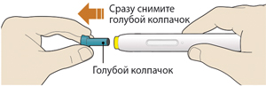 2. Держите шприц-ручку, как показано на рисунке. Не трогайте желтый защитный колпачок. Убедитесь, что Вы видите окно. 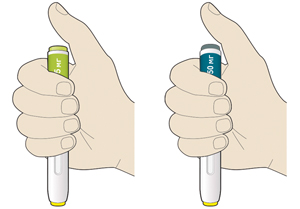 3. Прижмите желтый защитный колпачок к коже примерно под углом 90° Прижимайте шприц-ручку к коже и удерживайте ее так, чтобы желтый защитный колпачок стал невидимым (вдавленным в кожу). Шприц-ручка не будет работать, если желтый защитный колпачок не вдавлен в кожу полностью. При необходимости, зажмите кожу, чтобы убедиться, что место введения плотное. 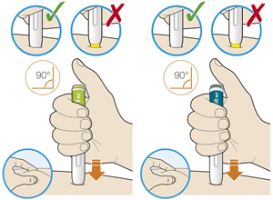 4. Нажмите большим пальцем на зеленую кнопку, если Вы используете шприц-ручку Пралуэнт 75 мг, или на серую кнопку, если Вы используете шприц-ручку Пралуэнт 150 мг, и сразу отпустите ее. Вы услышите щелчок. Введение препарата началось. Окно начнет желтеть.
5. Продолжайте удерживать шприц-ручку, плотно прижатой к коже после того, как отпустили кнопку Введение препарата может продолжаться до 20 сек. 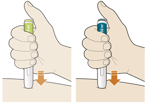 6. Проверьте, что окно стало желтого цвета до того, как уберете шприц- ручку от кожи Не убирайте шприц-ручку от кожи до тех пор, пока все окно не будет желтого цвета. Введение препарата завершено после того, как все окно будет желтого цвета, и Вы можете услышать второй щелчок. Если окно не стало полностью желтого цвета, не вводите самостоятельно вторую дозу без консультации врача.
7. Уберите шприц-ручку от кожи Не растирайте кожу после введения препарата. Если Вы видите кровь, прижмите ватный тампон или марлю и удерживайте их до тех пор, пока не остановится кровотечение. 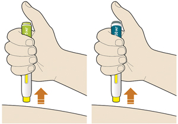 8. Утилизируйте шприц-ручку и колпачок Не надевайте голубой колпачок повторно. Поместите шприц-ручку в контейнер, резистентный к проколам. Всегда храните контейнер в недоступном для детей месте. 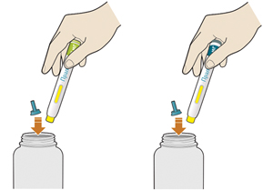 ПОДГОТОВКА И ОБРАЩЕНИЕ С ПРЕПАРАТОМ Пациент может вводить препарат Пралуэнт самостоятельно, или препарат может быть введен лицом, ухаживающим за пациентом, после предоставления им медицинскими работниками информации по правильной технике проведения п/к инъекций. Препараты для парентерального введения должны осматриваться визуально перед введением на предмет наличия видимых частиц и изменения цвета. Если раствор имеет измененный цвет или видимые частицы, его не следует использовать. Перед использованием предварительно заполненных шприц-ручек следует нагреть их до комнатной температуры. При необходимости (например, во время путешествия) препарат Пралуэнт можно хранить при температуре не выше 25°С не более 30 дней. Защищать от света. После извлечения из холодильника препарат Пралуэнт должен быть использован в течение 30 дней или утилизирован. После использования шприц-ручки следует поместить в резистентный к проколам контейнер и утилизировать согласно местным (государственным) требованиям. Не использовать контейнер повторно. Всегда следует хранить контейнер в местах, недоступных для детей. Пациенты и ухаживающие за ними лица должны получить руководство по надлежащей технике п/к введения, включая сведения по асептике, и по тому, как правильно использовать предварительно заполненные шприц-ручки. Пациентов и ухаживающих за ними лиц следует информировать о том, что перед первым введением препарата Пралуэнт они должны внимательно прочитать инструкцию по применению препарата. Пациентов и ухаживающих за ними лиц следует предупредить, что запрещено повторное использование шприц-ручек, и они должны быть проинструктированы, как безопасно утилизировать их после использования. В случае использования предварительно заполненного шприца к инструкции по медицинскому применению лекарственного препарата прилагается Инструкция по использованию предварительно заполненных одноразовых шприцев Описание предварительно заполненных одноразовых шприцев и инструкция по их использованию Пралуэнт, раствор для п/к введения 75 мг/мл в предварительно заполненном шприце Пралуэнт, раствор для п/к введения 150 мг/мл в предварительно заполненном шприце Инструкция по применению Пациент должен быть информирован о том, что он должен сохранять эту инструкцию, так как она может понадобиться ему снова. Если у пациента появятся вопросы, то ему следует обратиться к лечащему врачу или провизору, или позвонить по номеру телефона, указанному в инструкции. Части шприца показаны на рисунке.
Важная информация Шприц предназначен только для одноразового использования. Шприц с зеленым поршнем: в 1 мл раствора содержится 75 мг алирокумаба. Шприц с серым поршнем: в 1 мл раствора содержится 150 мг алирокумаба. Препарат вводится п/к и может вводиться пациентом самостоятельно или другим лицом, ухаживающим за ним. Шприц можно использовать только для одноразовой инъекции, и он должен быть утилизирован после применения. Правила использования Шприц следует хранить в недоступном для детей месте. Перед использованием шприц следует внимательно прочитать инструкцию. Необходимо следовать всем указаниям, представленным в инструкции, при каждом использовании шприца. Неиспользованные шприцы следует хранить в холодильнике при температуре от 2°С до 8°С. Запрещено Не трогайте иглу. Не используйте шприц при протекании или повреждении. Не используйте шприц при отсутствии серого колпачка для иглы, или если он ненадежно закреплен. Не используйте шприц повторно. Не трясите шприц. Не замораживайте шприц. Не подвергайте шприц-ручку воздействию прямых солнечных лучей. ЭТАП А: ПОДГОТОВКА К ВВЕДЕНИЮ Перед началом введения понадобятся:
1. Перед началом Возьмите шприц, удерживая его за корпус.
2. Проверьте этикетку на шприце Проверьте, что Вы взяли правильный (нужный Вам) препарат и правильную (нужную Вам) дозу (шприц с зеленым поршнем для дозы 75 мг/мл и шприц с серым поршнем для дозы 150 мг/мл). Проверьте срок годности: не использовать по истечении срока годности. Проверьте, чтобы жидкость в шприце была прозрачной, бесцветной или бледно-желтой, без включений. Если имеются изменения цвета и видимые включения, то не следует использовать шприц. Проверьте, что шприц не открыт и не поврежден. 3. Оставьте шприц нагреваться при комнатной температуре в течение 30-40 мин Не нагревайте шприц, он должен нагреться сам. Используйте шприц как можно скорее после того, как он нагреется. Не кладите шприц обратно в холодильник. 4. Подготовка места введения Вымойте руки с мылом и водой и вытрите их полотенцем. Вы можете вводить препарат (см. рисунок):
Вы можете стоять или сидеть во время проведения инъекции. Продезинфицируйте место введения салфеткой, смоченной спиртом. Не вводите препарат в болезненную, уплотненную, покрасневшую или воспаленную кожу. Не вводите препарат в места рядом с видимыми венами. Используйте разные места при каждом введении препарата. Не вводите препарат в одно и то же место с другими препаратами. ЭТАП В: КАК ВВОДИТЬ ПРЕПАРАТ 1. После завершения всех пунктов "ЭТАП А: ПОДГОТОВКА К ВВЕДЕНИЮ" снимите колпачок для иглы Не снимайте колпачок до тех пор, пока Вы не будете готовы к введению препарата. Держите шприц за середину корпуса так, чтобы игла была направлена от Вас. Не прикасайтесь к поршню. Вы можете увидеть пузырьки воздуха. Это нормальное явление и не влияет на дальнейшее использование препарата. Не избавляйтесь ни от каких пузырьков в шприце до начала инъекции. Не надевайте серый колпачок обратно. 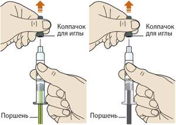 2. При необходимости зажмите кожу Большим и указательным пальцем зажмите кожу так, чтобы получилась складка кожи в месте введения. Удерживайте кожную складку во время проведения всей инъекции. 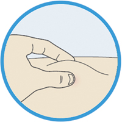 3. Введите иглу в складку кожу быстрым движением Используйте угол в 90° при сжатии 5 см кожи. Используйте угол в 45° при сжатии 2 см кожи. 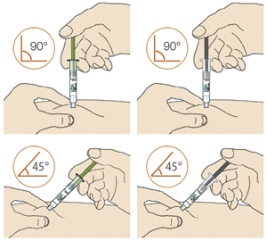 4. Опустите поршень вниз Введите весь раствор медленным и равномерным нажатием на поршень. 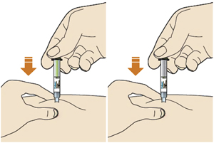 5. Перед тем как удалить иглу убедитесь, что шприц пуст Не удаляйте шприц, пока он полностью не опустеет. Извлекайте иглу из кожи под тем же углом, под каким она была введена. Не растирайте кожу после введения препарата. Если Вы видите кровь, прижмите ватный тампон или марлю и удерживайте их до тех пор, пока не остановится кровотечение. 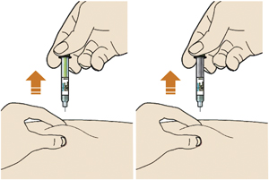 6. Утилизируйте шприц и колпачок. Не надевайте серый колпачок повторно. Не используйте шприц повторно. Поместите шприц в контейнер, резистентный к проколам. Всегда храните контейнер в недоступном для детей месте. 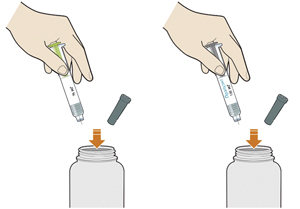 ПОДГОТОВКА И ОБРАЩЕНИЕ С ПРЕПАРАТОМ Пациент может вводить препарат Пралуэнт самостоятельно, или препарат может быть введен лицом, ухаживающим за пациентом, после предоставления им медицинскими работниками информации по правильной технике проведения п/к инъекций. Препараты для парентерального введения должны осматриваться визуально перед введением на предмет наличия видимых частиц и изменения цвета. Если раствор имеет измененный цвет или видимые частицы, его не следует использовать. Перед использованием предварительно заполненных шприцев следует нагреть их до комнатной температуры. При необходимости (например, во время путешествия) препарат Пралуэнт можно хранить при температуре не выше 25°С не более 30 дней. Защищать от света. После извлечения из холодильника препарат Пралуэнт должен быть использован в течение 30 дней или утилизирован. После использования шприцы следует поместить в резистентный к проколам контейнер и утилизировать согласно местным (государственным) требованиям. Не использовать контейнер повторно. Всегда следует хранить контейнер в местах, недоступных для детей. Пациенты и ухаживающие за ними лица должны получить руководство по надлежащей технике п/к введения, включая сведения по асептике, и по тому, как правильно использовать предварительно заполненные шприцы. Пациентов и ухаживающих за ними лиц следует информировать о том, что перед первым введением препарата Пралуэнт они должны внимательно прочитать инструкцию по применению препарата. Пациентов и ухаживающих за ними лиц следует предупредить, что запрещено повторное использование шприцев, и они должны быть проинструктированы, как безопасно утилизировать их после использования. Побочное действие
Представленные ниже данные по безопасности отражают применение алирокумаба у 3340 пациентов, большинство из которых имели высокий или очень высокий сердечно-сосудистый риск, и которые получали алирокумаб в дозе 75 мг и/или 150 мг в виде подкожных инъекций 1 раз в 2 недели с продолжительностью лечения до 18 месяцев (включая 2408 пациентов, получавших лечение алирокумабом в течение 52 недель, и 639 пациентов, получавших лечение алирокумабом в течение не менее 76 недель). Данные по безопасности основаны на объединенных результатах 9 плацебо- контролируемых исследований (4 исследования II фазы и 5 исследований III фазы (все исследования у пациентов, одновременно принимающих статины) и 5 контролируемых эзетимибом исследований III фазы (в 3 из которых пациенты одновременно принимали статины). В 10 контролируемых исследованиях III фазы, в которые были включены пациенты с первичной гиперхолестеринемией и смешанной дислипидемией, наиболее частыми нежелательными реакциями (≥1 % пациентов, получавших препарат Пралуэнт) были реакции в месте введения препарата, субъективные симптомы и объективные признаки со стороны верхних дыхательных путей и кожный зуд. Наиболее частыми нежелательными реакциями, приводящими к прекращению лечения у пациентов, получавших препарат Пралуэнт, были реакции в месте введения препарата. Профиль безопасности препарата в исследовании ODYSSEY OUTCOMES (изучение сердечно-сосудистых исходов) в целом соответствовал данным, полученным в других контролируемых исследованиях III фазы. Не наблюдалось различий в отношении профиля безопасности между двумя дозами (75 мг 1 раз в 2 недели и 150 мг 1 раз в 2 недели), использованными в программе клинических исследований III фазы. В контролируемых исследованиях III фазы по первичной гиперхолестеринемии и смешанной дислипидемии, 1158 пациентов (34.7%), получавших препарат Пралуэнт, были в возрасте ≥65 лет, и 241 пациент (7.2%), получавших препарат Пралуэнт, были в возрасте ≥75 лет. В исследовании по сердечно-сосудистым исходам 2505 пациентов, получавших препарат Пралуэнт были в возрасте ≥65 лет и 493 пациента, получавших препарат Пралуэнт, были ≥75 лет. Не наблюдалось значимых различий по безопасности и эффективности препарата при увеличении возраста пациентов. Нежелательные реакции, о которых сообщалось при применении препарата Пралуэнт в объединенных контролируемых исследованиях (включая исследование ODYSSEY OUTCOMES) и при пострегистрационном применении препарата Частота нежелательных реакций (НР), выявленных в клинических исследованиях, определялась на основании новых случаев НР во всех клинических исследованиях III фазы. НР представлены по системно-органным классам. Категории частоты определялись исходя из следующих критериев: очень часто (≥1/10), часто (от ≥1/100 до < 1/10), нечасто (от ≥1/1000 до <1/100), редко (от ≥1/10 000 до <1/1000), очень редко (< 1/10000), частота неизвестна (частота не может быть определена на основании имеющихся данных). Частота НР, о которых сообщалось в период пострегистрационного применения препарата, основана на спонтанных сообщениях. Поэтому частота этих НР классифицируется как "неизвестна". Со стороны иммунной системы: редко - реакции гиперчувствительности, аллергический васкулит. Со стороны дыхательной системы, органов грудной клетки и средостения: часто - субъективные симптомы и объективные признаки со стороны верхних дыхательных путей, включая боль в ротоглотке, ринорею, чиханье. Со стороны кожи и подкожных тканей: часто - кожный зуд; редко - крапивница, монетовидная экзема; частота неизвестна - ангионевротический отек (пострегистрационные данные). Общие расстройства и нарушения в месте введения: часто - реакции в месте введения препарата, включая эритему/гиперемию, кожный зуд, отек, боль/болезненную чувствительность; частота неизвестна - гриппоподобное состояние (пострегистрационные данные). Описание отдельных нежелательных реакций Реакции в месте введения препарата Реакции в месте введения препарата, включая эритему/гиперемию, кожный зуд, отек, боль/болезненную чувствительность, отмечались у 6.1% пациентов, получавших лечение алирокумабом, по сравнению с 4.1% в контрольной группе. Большинство реакций в месте введения препарата были преходящими и слабовыраженными. Частота прекращения лечения вследствие развития реакций в месте введения была сопоставимой в обеих группах (0.2% в группе алирокумаба по сравнению с 0.3% в контрольной группе). В исследовании сердечно-сосудистых исходов (ODYSSEY OUTCOMES) реакции в месте введения препарата также наблюдались с большей частотой в группе пациентов, получавших алирокумаб, в сравнении с плацебо (3.8% в группе алирокумаба и 2.1% в группе плацебо). Генерализованные аллергические реакции Генерализованные аллергические реакции чаще отмечались в группе алирокумаба, чем в контрольной группе, главным образом с различием в частоте развития кожного зуда. Кожный зуд был обычно слабовыраженным и преходящим. Кроме этого, в контролируемых клинических исследованиях сообщалось о развитии редких и иногда серьезных аллергических реакций, таких как реакции гиперчувствительности, монетовидная экзема, крапивница и аллергический васкулит. В исследовании сердечно-сосудистых исходов (ODYSSEY OUTCOMES) генерализованные аллергические реакции наблюдались с одинаковой частотой в группах лечения, получавших алирокумаб и плацебо (7.9% в группе алирокумаба и 7.8% в группе плацебо). Различий в частоте развития кожного зуда не наблюдалось. Исследование с использованием режима дозирования 300 мг 1 раз каждые 4 недели Профиль безопасности у пациентов, получавших режим дозирования 300 мг 1 раз в 4 недели, был аналогичен профилю безопасности с использованием режима дозирования каждые 2 недели, за исключением более высокой частоты развития реакций в местах инъекции. Реакции в месте инъекции препарата были зарегистрированы с частотой 16.6% в группе режима дозирования 300 мг 1 раз в 4 недели лечения и 7.9% в группе плацебо. Частота прекращения применения препарата из-за реакций в месте инъекции составляла 0.7% в группе режима дозирования 300 мг 1 раз в 4 недели лечения и 0% в группе плацебо. Пациенты, которым проводится ЛПНП-аферез Профиль безопасности у пациентов, которые получали лечение препаратом Пралуэнт в дозе 150 мг каждые 2 недели, и пациентов, которым проводился ЛПНП-аферез, был сходен с профилем безопасности, описанным в клинических исследованиях при использовании схемы с введением препарата каждые 2 недели у пациентов, которым не проводился ЛПНП-аферез. Низкие значения ХС-ЛПНП (<25 мг/дл [<0.65 ммоль/л]) Во всех клинических исследованиях базовая гиполипидемическая терапия не могла быть скорректирована согласно дизайну исследования. Процент пациентов, достигших значений ХС-ЛПНП (<25 мг/дл [<0.65 ммоль/л]), зависел как от исходного значения ХС-ЛПНП, так и от дозы алирокумаба Несмотря на то, что в исследованиях алирокумаба не было отмечено каких-либо неблагоприятных последствий достижения очень низких значений ХС- ЛПНП, долгосрочная безопасность этого события неизвестна. В опубликованных генетических, а также в клинических и наблюдательных исследованиях гиполипидемической терапии достижение более низких значений ХС-ЛПНП было ассоциировано с увеличением частоты впервые выявленного сахарного диабета. Иммуногенность/антитела к алирокумабу Как и все другие протеины, применяющиеся для лечения, алирокумаб обладает потенциальной иммуногенностью. В исследовании ODYSSEY OUTCOMES у 5,5 % пациентов, получавших лечение алирокумабом в дозе 75 мг и/или 150 мг 1 раз в 2 недели, после начала лечения отмечалось образование антител к алирокумабу (АА), по сравнению с 1.6% в группе пациентов, получавших плацебо. У большинства этих пациентов наблюдались преходящие реакции образования АА. Персистирующие АА наблюдались у 0.7% пациентов, получавших алирокумаб и у 0.4% пациентов, получавших плацебо. Нейтрализующие антитела наблюдались у 0.5% пациентов в группе алирокумаба и <0.1% в группе плацебо. АА, включая нейтрализующие антитела, регистрировались в низких титрах и не имели клинически значимого влияния на эффективность и безопасность алирокумаба, за исключением более высокой частоты реакций в месте введения препарата у пациентов с АА в сравнении с пациентами без АА (7.5% vs 3.6%). Долгосрочные последствия продолжения лечения алирокумабом при наличии АА неизвестны. В объединенных данных 10 исследований (включая исследования с плацебо-контролем и активным контролем), в которых пациенты получали лечение алирокумабом в дозах 75 мг и/или 150 мг 1 раз в 2 недели, а также в отдельных клинических исследованиях с режимом дозирования 75 мг 1 раз в 2 недели или 300 мг 1 раз в 4 недели (включая некоторых пациентов с коррекцией дозы до 150 мг 1 раз в 2 недели), частота образования АА и нейтрализующих антител была сопоставима с той, которая наблюдалась в исследовании ODYSSEY OUTCOMES и описана выше. Данные по иммуногенности зависят от чувствительности и специфичности методики их определения, а также от других факторов. Кроме этого, на наблюдаемую частоту АА-позитивного результата анализа оказывают влияние несколько факторов, включая обработку забранных проб крови, время забора крови, одновременно принимаемые лекарственные препараты и основное заболевание. По этим причинам сравнение частоты возникновения АА с частотой возникновения антител к другим препаратам может быть некорректным. Противопоказания
С осторожностью
Применение при беременности и кормлении грудью
Беременность Отсутствуют данные по применению препарата Пралуэнт у беременных женщин. Ожидается, что алирокумаб, как и другие антитела класса IgG, проникает через плацентарный барьер. Во время беременности применение препарата Пралуэнт не рекомендуется. Период грудного вскармливания Неизвестно, проникает ли алирокумаб в грудное молоко у человека. В связи с тем, что многие лекарственные препараты, и в т.ч. иммуноглобулины, проникают в грудное молоко у человека, применение препарата Пралуэнт у женщин в период грудного вскармливания не рекомендуется. При необходимости применения препарата Пралуэнт в данный период следует прекратить грудное вскармливание. Фертильность Данные о неблагоприятном воздействии алирокумаба на фертильность отсутствуют. Особые указания
Аллергические реакции В клинических исследованиях сообщалось о развитии генерализованных аллергических реакций, включая зуд; также имелись сообщения о редких и иногда серьезных случаях аллергических реакций, таких как реакции гиперчувствительности, монетовидная экзема, крапивница и аллергический васкулит. В ходе пострегистрационного применения препарата сообщалось о развитии ангионевротического отека (см. раздел "Побочное действие"). При появлении симптомов и признаков серьезных аллергических реакций лечение препаратом Пралуэнт должно быть прекращено и следует начать проведение соответствующей симптоматической терапии. Пожилые пациенты Данные о применении алирокумаба у пациентов старше 75 лет ограничены. В контролируемых исследованиях 1158 пациентов (34.7%), получавших препарат Пралуэнт, были в возрасте ≥65 лет, и 241 пациент (7.2%), получавших препарат Пралуэнт, были в возрасте ≥75 лет. Значимых различий в безопасности и эффективности препарата Пралуэнт с увеличением возраста не наблюдалось. Почечная недостаточность В клинических исследованиях количество пациентов с почечной недостаточностью тяжелой степени (КК <30 мл/мин/1.73 м2) было ограничено. Препарат Пралуэнт следует применять с осторожностью у пациентов с почечной недостаточностью тяжелой степени. Печеночная недостаточность Исследований алирокумаба у пациентов с печеночной недостаточностью тяжелой степени (класс С по шкале Чайлда-Пью) не проводились. Препарат Пралуэнт следует применять с осторожностью у данной категории пациентов. Влияние на способность к управлению транспортными средствами и механизмами Препарат Пралуэнт не влияет или почти не влияет на способность управлять транспортными средствами и работать с механизмами. Передозировка
В контролируемых клинических исследованиях не было выявлено никаких изменений безопасности при более частом введении доз, чем рекомендованный режим дозирования 1 раз в 2 недели. Не существует специального лечения при передозировке препарата Пралуэнт. В случае передозировки следует проводить симптоматическое лечение и поддерживающую терапию. Лекарственное взаимодействие
Влияние алирокумаба на другие лекарственные средства Т.к. алирокумаб является биологическим веществом, не ожидается каких-либо фармакокинетических эффектов алирокумаба на другие лекарственные препараты В клинических исследованиях при применении алирокумаба в комбинации с аторвастатином или розувастатином не наблюдалось каких-либо значимых изменений концентраций статинов в крови при повторных введениях алирокумаба, что указывает на то, что алирокумаб не влияет на изоферменты цитохрома P450 (главным образом, изоферменты CYP3A4 и CYP2C9) и белки-транспортеры, такие как P-гликопротеин (P-gp) и OATP (белок транспортер органических анионов). Влияние других лекарственных средств на алирокумаб Статины и другая липид-модифицирующая терапия, как известно, повышают синтез PCSK9 - белка, являющегося мишенью алирокумаба. Это приводит к повышению мишень-опосредованного клиренса алирокумаба и снижению его системной экспозиции. Тем не менее, снижение уровня ХС-ЛПНП сохранялось на протяжении терапии при применении алирокумаба 1 раз в 2 недели. |
||||||||||
Вернуться наверх |
||||||||||


Copyright © Справочник Видаль «Лекарственные препараты в России», Москва, Россия